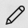

World Clock
You can use the World Clock to view the current time for various cities around the world.
To view World Clock:
- Click on the World clock icon
 on the left navigation bar.
on the left navigation bar. - Here, you can view the local time corresponding to your region.
- Click on the Add icon
 to add more cities and view their respective timezones.
to add more cities and view their respective timezones. - Enter the city name and click the Add button.
- You can now view the current time zone of the selected city.
- Click on the Edit button to delete any of the added cities.
- Click the Done button once done with changes.
- Click on the compare icon to compare the timezones of various cities in your list.